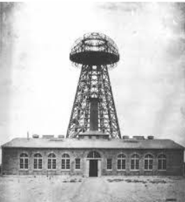

Introduction
Content
Our Team
- Darshan S
- Rishee K
- Ritik Kumar Mehta
- Sakshi Chavan
- Sudhaharan S J
Wireless Power Transmission
Introduction :-
Technology has come a long way in making human life easier. We live in a world of technological advancements where we see new technologies emerging every day just to make our lives easier and less complex, and we may not know to what extent our technological advances can guide us. Regardless, we still use the old classic and standard power transmission cabling system to charge our everyday Power devices. When it comes to charging multiple devices, the conventional wired system makes a mess, and some devices may have different charging ports. Despite all these,
how about a single device that can charge these devices simultaneously without creating a mess.
Wireless power transfer is the efficient way of transferring electrical energy from a source to a load without using wire as a physical medium whereas here vacuum is used as the medium.
The power can be transmitted using microwaves, millimeter waves, or lasers.

Wardenclyffe Tower
Today, microwaves and lasers are used primarily for the wireless transmission of energy.
In 1964, William C.Brown invented the rectenna, which could efficiently convert microwaves into direct current, and demonstrated this in 1964 with the first wireless powered aircraft, a model of helicopter powered by microwaves emitted from the ground.
From America`s Wave Inc. to the Japanese company Space Power Technologies and the New Zealand energy start-up Emrod - many companies are currently working on the technology of wireless energy transmission. Field trials have also started for some systems, and it will be interesting to see who is the first to come up with an efficient, and cost-effective wireless power solution in this race.
Wardenclyffe Tower